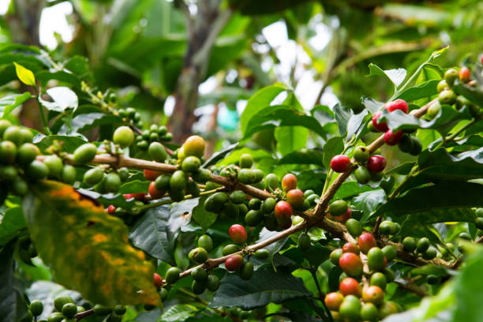

Eje Cafetero
El Eje Cafetero es el corazón verde de Colombia, famoso por sus extensos campos de café que cubren las laderas de las montañas. Aquí, el aroma del café recién hecho es una constante, y los visitantes pueden sumergirse en la cultura cafetera visitando fincas tradicionales, donde se aprende sobre el proceso de cultivo y producción del mejor café del mundo. Además de su riqueza cultural, el Eje Cafetero es un paraíso natural, con paisajes exuberantes, parques nacionales, y una calidez humana que hace de cada visita una experiencia acogedora y memorable.
